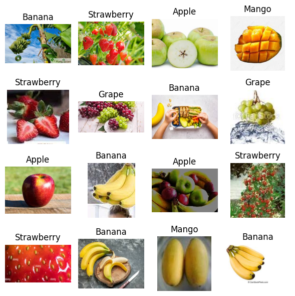
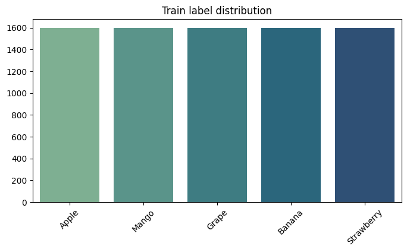
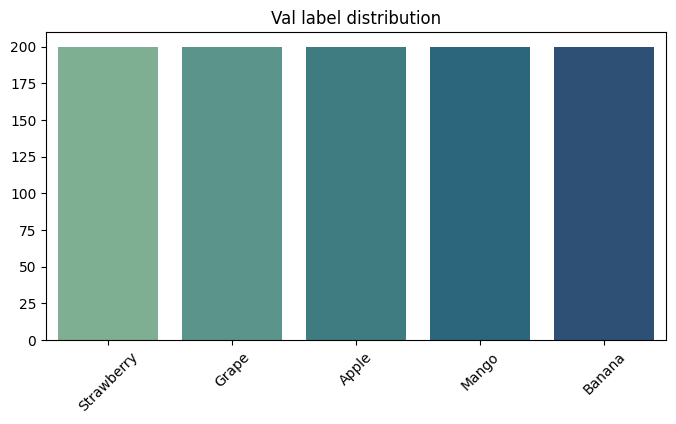

1. Exploratory Data Analysis
Dataset structure
Fruit Dataset provides 10,000 RGB images across 5 classes (banana, strawberry, grape, mango, apple). We combine all splits from dataset and resplit them into 80/10/10 ratio for train, validation, and test sets.
- Seeds (RND = 42) ensure reproducible splits via
train_test_splitorrandom_split. - Transforms normalize with ImageNet mean/std before both extraction and training.
- Class balance stays uniform thanks to Fruit Dataset's design.
Sample grid

Label distributions

Train

Validation
Test
2. Feature Extraction & Preprocessing
Deep feature backbones
A factory in BTL3_traditional.ipynb selects pretrained models and removes their heads to yield feature vectors per image.
torchvision: VGG16 (fc6), ResNet50, EfficientNet-B0.timm: ViT-base-patch16-224 and Swin-base-patch4-window7-224 with average pooling.- Classical baselines: HOG descriptors and SIFT + BoVW histograms.
- Features cached under
features/{model}/{split}_features.npzfor reuse.
Extraction uses build_transform: resize+center-crop (or custom size) then, for training, RandomHorizontalFlip 0.5 + ColorJitter (0.3) + RandomRotation 15° + RandomResizedCrop; val/test skip aug. All paths finish with ToTensor+ImageNet normalize; classical HOG/SIFT use grayscale and custom sizes. dataset_to_dataloader wraps datasets without shuffling for feature passes.
Scaler + PCA pipeline
fit_scaler_and_pca learns a scaler and optional PCA (None or 0.95 variance) on the train split; transform_with_scaler_pca applies the same to val/test before classifiers consume the data.
- PCA is optional (default 0.95 when enabled) and capped by the embedding dimension.
- Comparison runs evaluate both PCA options and cache the best settings.
- Scaler/PCA artifacts are reused across comparisons to ensure fairness.
3. Traditional Machine Learning Pipeline
Classifier roster & tuning
The traditional notebook trains five classifiers via train_and_evaluate and optionally fine-tunes their hyperparameters with tune_hyperparameters over PCA∈{None, 0.95}.
LogisticRegression(saga solver) andLinearSVCtuneC.RandomForestClassifier,KNeighborsClassifier, andMLPClassifierexplore tree depth, neighbors, hidden sizes, and regularization.- Best params cached to
tuned_hyperparams.jsonand reused byrun_comparison. train_and_evaluatefits on train+val, tests on held-out test, and records accuracy, reports, confusion matrices, training time, and inference time.
Inference time
Scatter plot contrasts classifiers' inference latency with their test accuracy, highlighting the trade-offs in the traditional pipeline.

4. Deep-Learning Pipeline
Preprocessing & training loop
preprocessing(CONFIG) builds train transforms (resize → RandomHorizontalFlip 0.5 → ColorJitter(0.25) → ToTensor → ImageNet normalize) and lighter val/test transforms (resize → ToTensor → normalize) with persistent DataLoaders; train_and_test(CONFIG) runs two stages: frozen-backbone training then full fine-tuning with label-smoothed CrossEntropy.
- Stage 1: backbone frozen, head trained with AdamW; Stage 2: full model fine-tunes with LinearLR warmup then CosineAnnealingLR (EfficientNet-B0 switches to RMSprop).
- Mixed precision via
autocast+GradScaler; early stopping (patience 4, min_delta 0.001) restores best weights. - DataLoaders shuffle training only; val/test remain deterministic with persistent workers.
- Outputs accuracy, precision, recall, F1, training time, and inference time; single-model mode also prints reports and confusion matrices.
Model options
train_and_test builds models via timm.create_model with classification heads sized to 5 classes:
torchvision: VGG16-BN, ResNet50, EfficientNet-B0.timm: ViT-base-patch16-224 and Swin-tiny-patch4-window7-224.- Model moves to GPU when available.
5. Combined Model Comparison: End-to-End vs Feature Extraction
Approach Comparison
Metrics: Accuracy, Training Time (s), Inference Time (s)
For each architecture, we compare two approaches: (1) end-to-end fine-tuning, and (2) using the pretrained model as a feature extractor with the best traditional ML classifier. The feature extraction approach dramatically reduces training time while often achieving comparable or superior accuracy.
| Rank | Architecture | Approach | Accuracy | Training Time (s) | Inference Time (s) |
|---|---|---|---|---|---|
| 1 | SwinTransformer | Feature Extractor + ShallowMLP | 0.967 | 38.86 | 0.0332 |
| 2 | ViT | End-to-end fine-tune | 0.966 | 954.74 | 11.93 |
| 3 | ViT | Feature Extractor + ShallowMLP | 0.953 | 19.47 | 0.0169 |
| 4 | SwinTransformer | End-to-end fine-tune | 0.952 | 951.60 | 4.56 |
| 5 | EfficientNet-B0 | End-to-end fine-tune | 0.951 | 975.90 | 2.98 |
| 6 | VGG16 | End-to-end fine-tune | 0.933 | 2045.40 | 5.81 |
| 7 | EfficientNet-B0 | Feature Extractor + ShallowMLP | 0.931 | 53.19 | 0.0582 |
| 8 | ResNet50 | End-to-end fine-tune | 0.928 | 1021.01 | 3.46 |
| 9 | ResNet50 | Feature Extractor + ShallowMLP | 0.926 | 52.48 | 0.0319 |
| 10 | VGG16 | Feature Extractor + ShallowMLP | 0.908 | 103.99 | 0.0592 |
| 11 | SIFT | Feature Extractor + RandomForest | 0.525 | 27.17 | 0.0681 |
| 12 | HOG | Feature Extractor + ShallowMLP | 0.396 | 101.86 | 0.0571 |
Key Observations:
-
Superior Accuracy with Traditional ML: The feature extraction approach using SwinTransformer achieves the highest accuracy (0.967), surpassing all end-to-end fine-tuned models. This demonstrates the effectiveness of leveraging pre-trained features combined with optimized classifiers.
-
Dramatic Training Time Reduction: Traditional ML approaches reduce training time by 20–50× (e.g., 951.60s → 38.86s for SwinTransformer, 1021.01s → 52.48s for ResNet50), making them far more practical for rapid experimentation and deployment.
-
Inference Speed Advantage: Feature extraction with traditional classifiers achieves 50–350× faster inference (e.g., 11.93s → 0.0169s for ViT), critical for real-time applications.
-
Architecture Consistency: Modern vision transformers (ViT, SwinTransformer) consistently outperform CNNs (VGG16, ResNet50, EfficientNet-B0) in both approaches, reflecting their superior feature representation capabilities.
-
Efficiency Trade-off: While end-to-end fine-tuning can match feature extraction accuracy (e.g., ResNet50: 0.928 vs 0.926), the computational cost is unjustifiable given the marginal gains.
6. Conclusion
This assignment demonstrates a comprehensive comparison between two fundamental approaches to image classification: traditional machine learning with deep feature extraction and end-to-end deep learning fine-tuning.
Key Findings
Feature Extraction Superiority: The feature extraction pipeline using SwinTransformer backbone with ShallowMLP classifier achieved the highest accuracy of 96.7%, exceeding all end-to-end fine-tuned models. This highlights the value of leveraging pre-trained features from large-scale datasets.
Computational Efficiency: Traditional ML approaches are dramatically more efficient, reducing training time by 20–50× and inference time by 50–350× compared to end-to-end fine-tuning, making them ideal for resource-constrained environments.
Vision Transformer Dominance: Both SwinTransformer and ViT consistently outperform CNN-based architectures (VGG16, ResNet50, EfficientNet-B0), confirming the superior feature representation of vision transformers.
Practical Trade-offs: While end-to-end fine-tuning provides some advantages (e.g., task-specific optimization), the marginal accuracy gains (≤0.2%) do not justify the computational overhead for this fruit classification task.